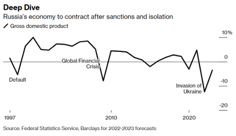
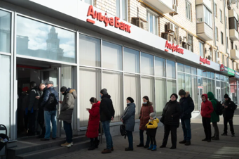

우크라이나 전쟁을 일으킨 러시아를 향한 높은 강도의 국제적인 경제적 제재에 대해 알아보도록 하자.
러시아를 향한 경제 제재에는 대표적으로 2가지가 얘기된다. 첫번째로 러시아의 2위 은행인 VTB 은행을 포함한 러시아 은행의 25%
(1)가 ‘국제은행간통신협회(SWIFT)'에서 배제되었다. SWIFT는 대부분의 세계 금융기관들이 결제를 위해 쓰는 전산망으로 이 제재는 러시아의 국제 금융 고립을 목표로 한 것이다
(2) —SWIFT에서 배제된 은행들은 국제 시장에 접근을 못하게 된다
(3). 두번째로 러시아의 해외 자산의 동결이다. 대략 6000억 달러(한화 약 600조 원)에 육박하는 러시아의 해외 자산은 본래 러시아 경제의 든든한 안전망이었지만, 러시아의 우크라이나 침공에 따른 여러 국가의 제재로 이 돈은 쓸 수 없게 동결되었다(*자산 동결: 국가가 자산의 처분이나 이동을 금지하는 일).
 이러한 경제적 제재들은 러시아 경제에 큰 영향을 미쳤다. 강도 높은 경제 제재로 러시아의 GDP는 2022년 12.4%의 하락이 골드만삭스 등에서 예측
(4)되었고, 러시아 화폐인 루블의 가치는 지난 20년 중 가장 최악으로 하락하였다(2022.03.07 1 USD=150 RUB)
(5). 러시아에서 인플레이션의 바람이 불기 시작하며 러시아 국민들은 불안에 떨고 있다. 러시아의 금융 시스템에 대한 국민들의 신뢰가 떨어지고 인플레이션 조세가 상승하면서
(6), ATM에서 돈을 뽑기 위해 길게 선 줄은 러시아에서 흔히 볼 수 있는 광경이 되었다. 이렇게 우크라이나 침공에 따른 경제 제재들이 국민들의 삶에 직접적으로 부정적인 영향을 미치자 러시아 내에서의 반전쟁 시위가 거세졌다
(7). 러시아 국민만이 경제 제재의 힘을 느끼고 있는 것이 아니다. 맥도날드 등 수많은 러시아 내 기업들은 러시아에서 있을 때 받을 수 있는 경제 제재들과 기업 평판 하락을 피하기 위해 재빠르게 러시아에서 발을 빼고 있다.
(8)
*사실 러시아가 경제 제재로 인한 공급 충격과 가수요 증가에 따른 국내 인플레이션을 해소시킬 수 있는 가장 쉬운 방법은 위에서 언급한 600억 달러의 해외 자산을 끌어와 경제를 부양시키는 것인데, 현재 이 또한 막혔으니 러시아는 굉장히 난감한 입장일 것이다.
(9)

▲ 인플레이션에 대비해 돈을 뽑으려고 ATM 앞에 줄을 서는 러시아 시민들
(10)
경제 제재에 대한 러시아의 대응에 대해 여러 의견들이 나오고 있다. 러시아는 유럽의 에너지 산업에서 큰 부분을 차지하고 있는데
(11), 러시아가 유럽으로의 가스나 러시아가 주 생산자인 여러 특수 금속 수출을 축소하는 대응을 보인다면 유럽에 큰 압박이 가해질 거라는 것이다. 이에 더해 만약 러시아가 우크라이나를 장악한다면 우크라이나의 희귀 가스
(12)의 수출 또한 러시아가 통제하여 경제 제재에 맞대응할 수 있다
(13).
혹자는 이러한 경제 제재들이 결국 러시아의 우크라이나 침공을 막지 못했다는 점에서 실패했다고 말할 수도 있을 것이다. 하지만 전문가
(14)들은 경제 제재는 애초에 침공을 지연하는 것을 기대하며 한 것이 아닐 뿐더러, 이러한 경제 제재들이 앞으로도 러시아군의 후퇴를 부르는 데에 큰 역할을 할 가능성 또한 희박하다고 얘기한다. 그러나 경제 제재들은 러시아의 경제적 능력을 저하시키고 더 나아가 러시아의 군사적 능력에도 치명적인 영향을 줄 것이라는 점에서 의의를 발견할 수 있다고 한다.
**Writer’s Note**
학급 신문 기사 초안을 작성한 후 서울국제고 거시경제 교사 이원용 선생님께 피드백을 받으러 갔다. 여러가지 점들을 짚어주시며 기사를 보완하는 것을 도와주셨는데 그 중 선생님과 여러 차례 토론했던 핵심 질문 하나를 나누고자 한다.
러시아 경기에 대해 조사를 하다가 러시아 시민들이 현금을 인출하기 위해 ATM 앞에 길게 줄을 선 모습을 담은 사진을 보고 인상 깊어 내 기사에도 넣었는데, 선생님께서 인플레이션 상황에 왜 이런 현상이 나타나는지 부가 설명을 덧붙이는 것을 추천해주셨다. 사진에 대한 설명을 알아내기 위해 해당 사진을 쓴 기사들을 읽어봤지만 어디에도 ATM에 몰리는 현상에 대한 인과 설명이 없었다. 그래서 수업 시간에 배운 거시경제 지식들을 바탕으로 추론을 해보았다. 내가 생각해본 요인들을 2가지이다;
(1) 인플레이션 조세 피하기
인플레이션이 일어나면 화폐 가치가 떨어지면서 현금을 보유한 모든 사람한테 세금이 부과되는 것과 같은 효과가 일어나 이른바 ‘인플레이션 조세(Inflation tax)’가 발생한다. 사람들은 이 인플레이션 조세를 피하기 위해 가지고 있던 현금이나 요구불예금을 상대적으로 가치 변동이 적은 자산으로 바꾸는데, 이 것이 러시아에서는 ATM에서 위험자산(가치 변동성이 큼)인 루블화 요구불예금을 인출하여 조금이라도 더 가치가 높을 때 재화나 서비스와 같은 실물자산에 소비하거나 페트로 달러 체제
(15)로 상대적으로 안전자산인 달러로 바꾸는 현상으로 나타난 것이다. 정리하자면 인플레이션 조세를 피하기 위해 보유하던 요구불예금을 다른 안전자산으로 바꾸고자 ATM 앞에서 인출을 기다리고 있는 것이다.
*ATM에서 줄을 길게 서있으며 허비되는 시간이나 기회비용은 구두창 비용(Shoeleather costs)라고 불린다.
(2) 금융기관 신뢰 하락에 따른 뱅크런
러시아 은행의 지불 능력에 대한 의심으로 일어나는 가벼운 수준의 뱅크런 현상일 수도 있다. SWIFT 제재를 받은 러 은행들은 인플레이션으로 높아져만 가는 인출 요구에 비해 예금 감소와 국제거래 퇴출로 자금줄이 막혀 현금 보유량이 적을 것이다. 러시아 시민들도 이를 알고 미래에는 은행에서 현금이 부족해 예금을 못 돌려 줄까봐 지금 최대한 은행 예금을 많이 현금으로 뽑고 있는 것이다. SWIFT 제재를 받은 은행들이 러시아 2위 은행을 포함한 주요 은행들이라서 이들이 받은 금융적 타격이 직접적인 제재를 받지 않은 은행들에게도 영향을 주어 연쇄적인 뱅크런 현상이 일어날 수 있다. 정리하자면 금융기관에 대한 시민들의 신뢰가 떨어져 초조한 예금주들의 인출 현상이 일어나는 것이다.
나는 이렇게 ATM 몰림 현상을 인플레이션 조세와 금융기관 신뢰 하락으로 설명했는데, 이 두 요인은 독립적인 것이 아니라 긴밀하게 연결되어 있다(이 두 요인 말고도 작은 기타 요인들이 작용했을테지만 이원용 선생님과 나는 대표적인 요인으로 앞의 두 개를 꼽았다). 수업 시간에 배웠던 개념들을 실제 시사 이슈를 분석하는 데에 활용해보며 개념을 효과적으로 복습했을 뿐만 아니라 경제학의 실용적인 성격을 실감할 수 있었다.
우크라이나 침공 이후 러시아 경제에 대해 조사를 하며 잠깐 맛을 봤지만 이번 기사에서는 다루지 않은 이슈들이 있는데 이후 추가 탐구를 진행해볼 예정이다(독자도 기사를 읽고 러 경제에 대해 관심이 생겼다면 한 번 쯤 찾아볼만한 이슈들이니 참고 추천)
- 불황(침체)에 익숙한 러시아 경제
- 러시아의 공급 부족과 중국 경제권
- 서방의 러시아에 대한 에너지 의존 향후 변화 방향(중장기적 대체)
[작성자: 경제팀 강태희]